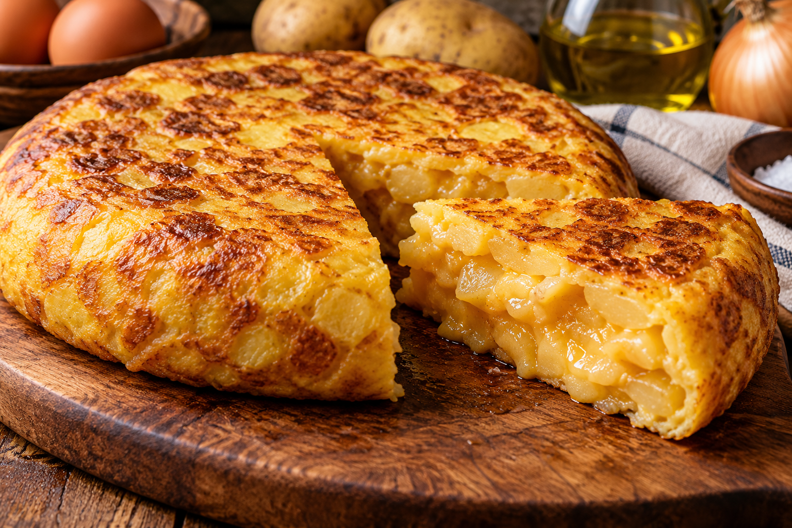

Tortilla de Patatas
Ingredientes:
- 5 Patatas
- 6 Huevos
- 1 Cebolla
- Aceite de oliva
- Sal

Elaboración
- Pelar y cortar las patatas y la cebolla.
- Freír las patatas y la cebolla en aceite de oliva.
- Batir los huevos en un recipiente y añadir sal.
- Mezclar las patatas y la cebolla con los huevos batidos.
- Cocinar la mezcla en una sartén y darle la vuelta.
- Cocinar por el otro lado hasta que la tortilla esté lista.
Descargar receta en PDF